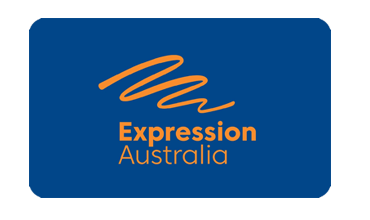

95
percent of deaf children
are born to hearing parents
Become More Involved with the Deaf Community
By learning sign language, a bridge of communication with the Deaf community can be formed. This lets deaf children to socialize with other people who also experience deafness. Hence, children are able to learn more and bond with people who have experienced Deaf culture. This also allows children to embrace their identity as a deaf person.
Being more involved with the Deaf community allows children to share their struggles and get advice from those in the Deaf community, as deaf children feel as if their parents may not entirely understand how they feel as they are not deaf themselves. This does not mean children care less about their parents, as they are not deaf, but it shows that they feel more comfortable conversing with someone who has had the same experiences as them. It also brings them comfort knowing that there are also people like them.
Myths and Misconceptions
Many parents are often hesitant to teach sign language to their children due to a number of fears and misunderstandings. But is there some truth in these misconceptions or are they completely false?
"Sign language prevents deaf children from learning the spoken language properly"
It has been often argued that sign language can risk children's language development. However, it is reported that there is no evidence for this claim. In fact, evidence for the opposite can be found instead. Due to sign language being a visual language, it is fully accessible for deaf children. In contrast, when children learn spoken languages, they may still experience gaps in their development as the information from the spoken language is not reaching and difficult to process for the child.
"Deaf children learn language the same way hearing children do."
Deaf children are able to develop language as well as hearing children when they are exposed to fluent sign language from birth. Sign language allows children to comprehend the idea of language and will then have a stable base of understanding when learning a new language.
This problem can be compared to a situation where children are being taught addition of numbers without understanding the concept of numbers. Some children may be able to understand it right away. However, some children may experience trouble in learning it as they do not have a basic comprehension of the concept.
"Learning sign language would isolate my child from society"
It is true that deaf people are often prejudiced from society and as a result, become isolated due to their differences and language barrier. However, sign language can help children become more included into the Deaf community instead. This is due to the fact that sign language can only be understood by those in the Deaf community. Therefore, by learning sign language it shows that you are willing to put effort into integrating in the Deaf community.
Wanna learn sign language?
Here are some reliable sites you can visit when you wish to start learning sign language!
Expression Australia

- Expression Australia is a Deaf community support organisation, established in 1884, which aims to give Deaf or hard of hearing people an opportunity to connect with society.
Auslan Signbank
- Auslan Signbank is a language reference page for Auslan (Australian Sign Language), functions similarly to a sign language dictionary.
Deaf Can:Do
- Deaf Can:Do is a charitable service provider, based in South Australia, that has supported the Deaf and hard of hearing community since 1891.
Need help from a professional?
Don't hesitate to leave your questions here if you need more specific details from a professional!